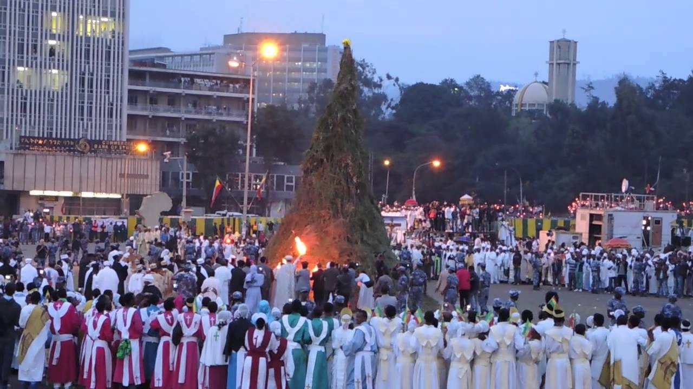
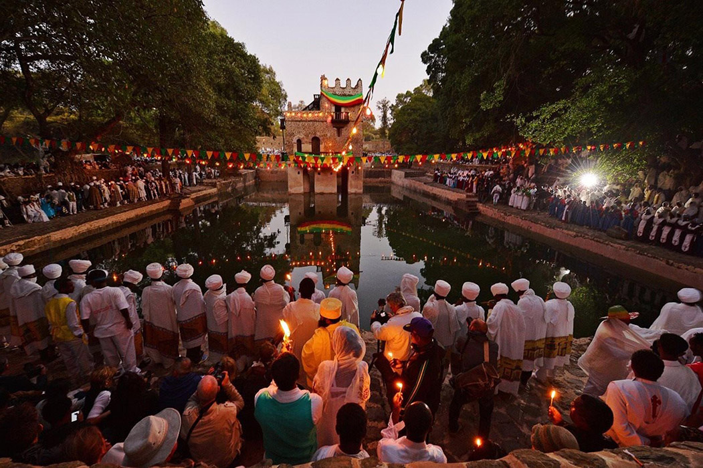

Meskel
Meskel, one of the major Ethiopian Orthodox festivals is celebrated for two days beginning September 26th. Legend has it that in the year 326, Queen Helena
(Empress Helen) the Mother of Constantine the Great, discovered the cross upon which Christ was crucified. Unable to find the Holy Sepulchre, she prayed
for help and was directed by the smoke from a burning fire as to where the cross was buried. After unearthing the Holy Cross, Queen Helena lit torches
heralding her success. In the Middle Ages, the Patriarchof Alexandria gave the Ethiopian Emperor Dawit half of the True Cross in return for protection
afforded to the Coptic Christians. A fragment of the True Cross is reputedly heldat the Gishen Mariam, about 70 kilometers northwest of Dessie.
Ethiopians have been celebrating this day for millennium. There are two occasions on Meskel. The first is Demera (September 26), in which bonfires are
built topped by a cross to which flowers are tied. The flowers are Meskel Daisies.The Patriarch of the Ethiopian Orthodox Church orchestrates the
lightening ceremony. After the bonfires are blessed they are lit and dancing and singing begins around them. Priestsin full ceremonial dress sing around
the bonfire. Little Demera are also built at individual houses or villages. After some time, splinters from the bundles of burning wood collapse. Which
direction they fall is very significant: north, south, east or west Interpretations are soon conjectured as to whether the fields of grain are going to
be plentiful or not, or there is peace all year round, etc. At the closing of the Demera, a rain shower is expected to fall to help put the fire out.
If the rain falls and the fire is extinguished, there is a belief that the year will be prosperous. The day after the Demera is Meskel. This day is
observed with plenty of food and drink as believers go to the spot of the Demera and, using ashes from the fire, mark their heads with the sign of
the cross. The festival coincides with the mass blooming of the golden yellow Meskel daisies. The best place to see the Meskel Festival is in the
capital Addis Ababa at the famous Meskel Square. But all along the Historic route (Bahir Dar, Gonder, Axum, and Lalibela) and in other major towns,
Meskel is colorfully celebrated.

Timket
Celebrating the Baptism of Christ, every January 19th (January 20 during leap year), Timkat is the greatest colorful festival of Orthodox Christians in Ethiopia.
It celebrates the Baptism of Christ by John the Baptist. The eve of Timket is called Ketera. This is when the Tabots of each church are carried out in
procession to a river or pool of water where the next day's celebration will take place. A special tent is set up where each Tabot rests as members of the
church choirs chant hymns. This is accompanied by a special dance by the priests with their prayer sticks and sistera, the beating of drums, ringing of bells,
and blowing of trumpets. The Tabot symbolizes the Ark of the Covenant and the tablets of the Law, which Moses received on Mount Sinai. It is the Tabot rather
than the church building, which is consecrated, and it is accorded extreme reverence. When the Tabot is carried out, it is wrapped in brocade or velvet
"like the mantle of Christ" and carried on the head of a priest with colorful ceremonial umbrellas shading it. The priests pray throughout the night and mass
is performed about 2:00 am the next day. Near dawn the people go to the water and attend the prayers. After the prayer, a senior priestuses a golden
processional cross to bless the water and extinguishes a burning consecrated candle in the water. Then he sprinkles the water on the assembled congregation
in commemoration of Christ's baptism. Many of the more fervent leap fully dressed into the water to renew their vows. The Timkat ceremony is merely a
commemoration, not an annual rebaptism. After the baptism, the Tabots of each church, except St. Michael's church, start their way back to their respective
churches. The elders march solemnly, accompanied by singing, leaping priests and young men, the beating of staffs and prayer sticks recalling the ancient rites
of the Old Testament (11 Sam.Chap.6) The next day, 20 Jan, is the feast of Michael the Archangel, Ethiopia's most popular saint. And it is only on this morning
that the Tabot of St. Michael’s is returned to his church, also accompanied by the singing and dancing of priests and locals with their colorful dress.
Thus endsthe three-day celebration, a unique ceremony of the Ethiopian Orthodox Church, which evolved in relative isolation from the rest of the world.
The best place to attend the event is Lalibela, Gonder or Addis Ababa. In Addis Ababa many tents are pitched in the grassy field at Jan Meda, to the
northeast of the city center. At 2:00am a massis attended by crowds who've brought picnics to enjoy by the light of oil lamps. At dawn the priest extinguishes
a candle burning on a pole setin a nearby river using a ceremonial cross. Some in the congregation leap into the river. The Tabots are then taken back to
the Churches in procession,accompanied by horsemen, while the festivities continue.
